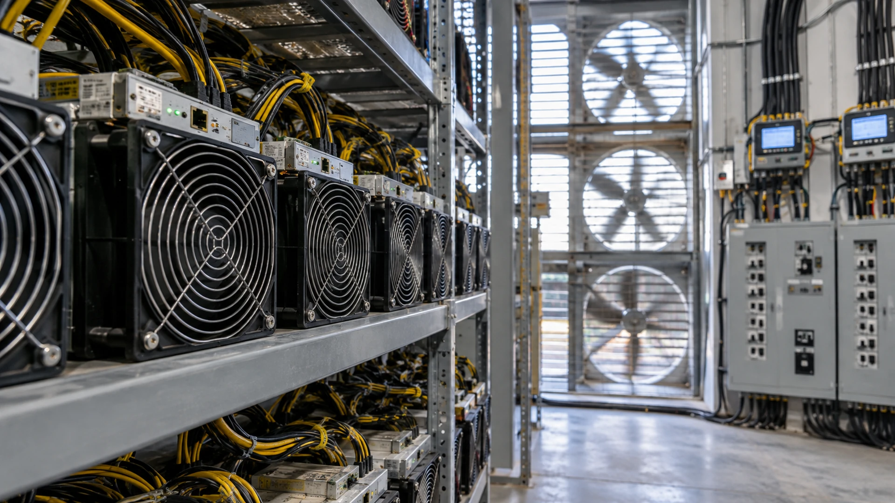

A Bitcoin Miner Sells Computing Work Against a Volatile Reward
Power, equipment efficiency and network competition shape mining returns. Production volume alone cannot establish profitability.
TTN Research Desk · Published Aug 14, 2026 · Updated Oct 12, 2026

A mining company's bitcoin output can increase while its financial position weakens. Producing more coins does not establish what each coin cost or how much capital was needed to obtain it.
Miners use specialized equipment to contribute proof-of-work computing power. Their expected share of rewards depends on their computing power relative to competitors, while outcomes vary over shorter periods. Block rewards combine the subsidy with transaction fees.
Electricity is a major operating input, alongside maintenance, site costs and personnel. Hardware purchases and financing also matter. A reported cost per bitcoin may omit depreciation or other expenses, so definitions must be compared before ranking companies.
The subsidy halves according to the protocol schedule. Higher network competition can further reduce a given operator's expected output unless it expands or improves its equipment. Neither a rising bitcoin price nor efficient machinery guarantees a good return on a highly priced investment.
Power agreements and curtailment arrangements can affect revenue and costs. Repurposing sites for other computing workloads requires another investment case: mining hardware and a power connection do not by themselves supply the networking, reliability and equipment needed for AI services.
Read production alongside the full cash-cost definition, capital spending, debt and coin holdings. Holding mined bitcoin creates another price exposure that should be separated from the profitability of producing it.
Sources and methodology
Primary references for the definitions, methods and risks discussed above. Examples labeled hypothetical or illustrative are not current market quotations.
TTN analysis for informational purposes. This article is not investment, tax or legal advice.